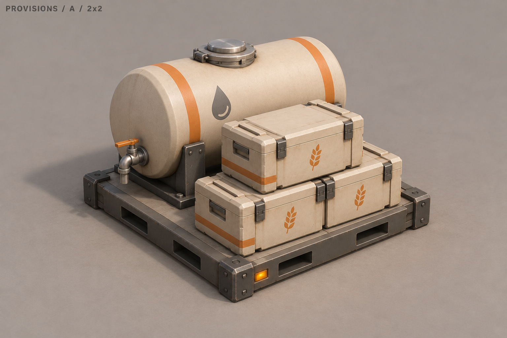
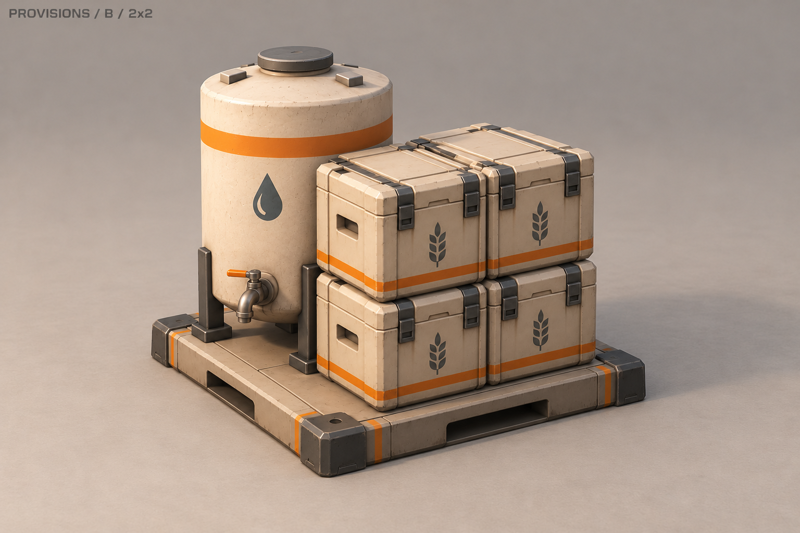
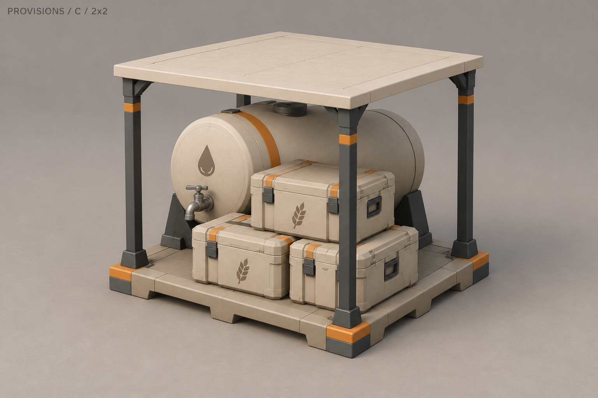
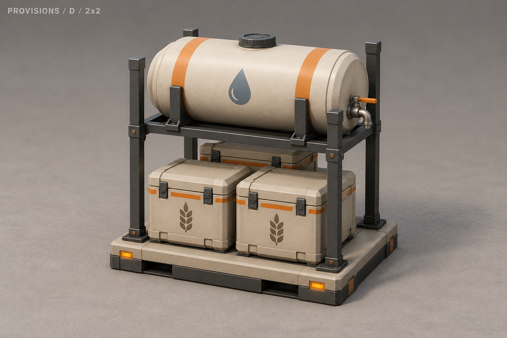
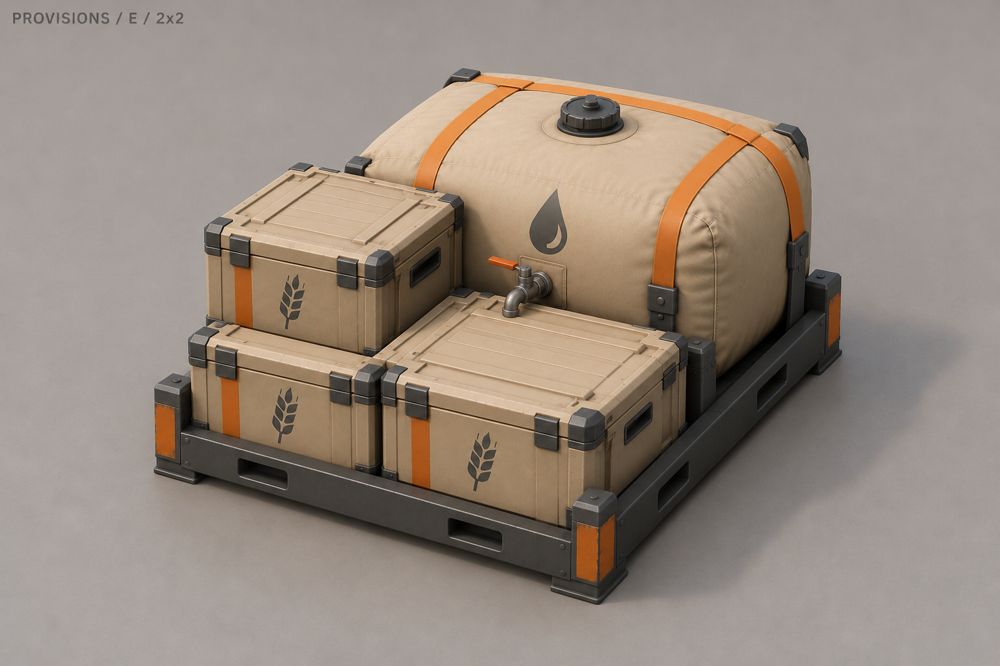
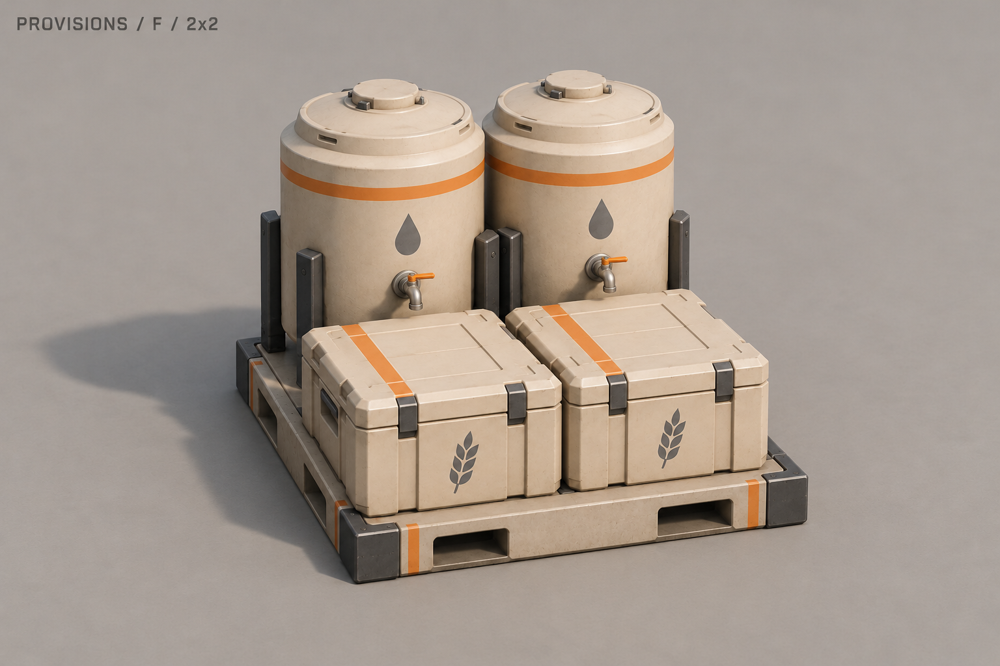
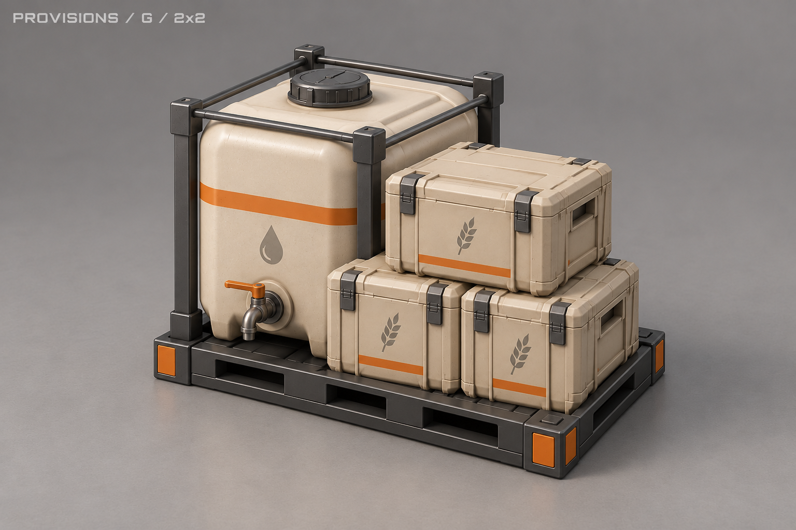
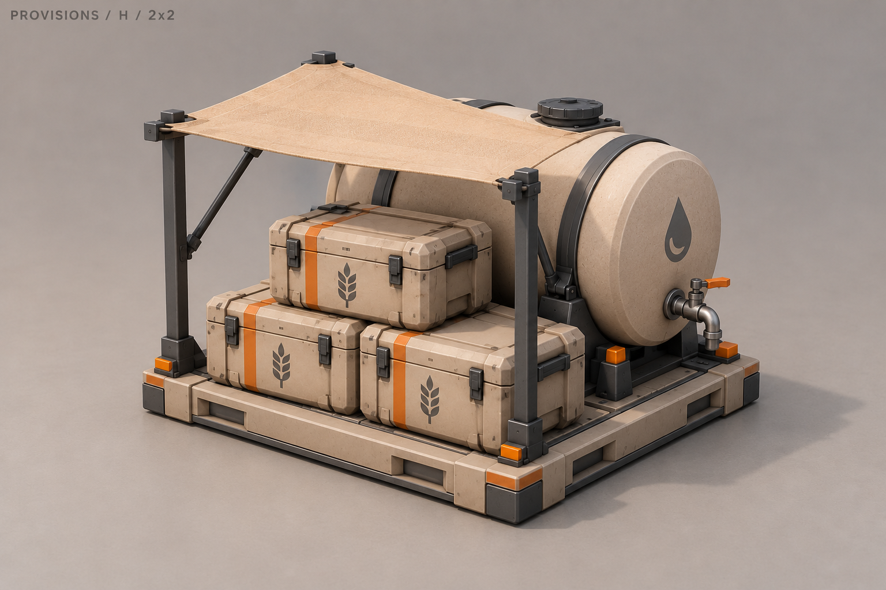

A «Цистерна и пайки»
Горизонтальная цистерна и три ящика с пайками на общей платформе.

B «Водонапорный»
Вертикальный бак и четыре ящика, сложенные в два ряда.

C «Под навесом»
Цистерна и пайки под тонким открытым навесом.

D «Стеллаж»
Бак на верхнем ярусе, три ящика на нижнем.

E «Мягкий запас»
Мягкая ёмкость для воды в поддоне и три ящика рядом.

F «Два резервуара»
Два вертикальных бака и два широких ящика.

G «Паллеты»
Кубическая ёмкость в лёгкой раме и ящики на паллете.

H «Козырёк»
Цистерна сбоку и пайки под небольшим консольным тентом.